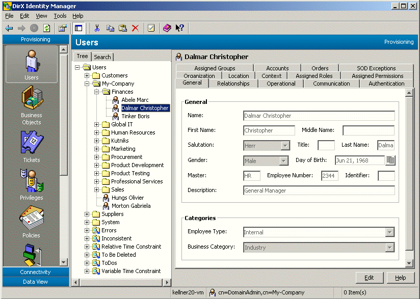

User-Management_506724354
[title-text] DirX Identity Knowledge Base : User Management #
Created by Gary Weissenbacher, last modified on Jul 03, 2024
[RH_PD_TOC_BK .confluence-anchor-link]#Managing Users
This section provides information about the pre-requisites for user management. User management consists of the following tasks:
-
Maintaining an accurate and up-to-date directory of the users to be administered with DirX Identity. This task depends on whether DirX Identity is the master or whether a corporate user directory is the master.
-
Assigning privileges to users (roles, permissions, groups) either by hand or fully automatically via policies (controlling access rights).
This section also provides information about:
-
How to work with user query folders to search for users.
-
How to work with user states.
-
How to work with links at user entries.
User Management Pre-Requisites
The following tasks need to be performed before you can manage DirX Identity users:
-
The existing account and group data of all target systems for which user access rights are to be granted must be imported into the Identity Store. Use the initial load workflows to perform this task.
-
The accounts must be assigned to users (the initial load workflow usually performs this step automatically). You can run a consistency rule at any time to check for unassigned accounts and to assign the correct users. Assignment by hand is the third option to perform user-account assignment.
-
If there are multiple accounts assigned to a user within one target system, only one primary account is managed by DirX Identity: its state and its assigned groups are calculated by the privilege resolution of the user. You can apply a consistency rule to create personas for non-primary assigned accounts. These accounts are then re-assigned to the persona and become primary accounts that are managed by the privilege resolution of their persona.
-
You can apply a consistency rule to create functional users for unassigned accounts. These accounts are then assigned to the functional users and are also managed by DirX Identity. Be careful to determine whether it makes sense to create a functional user for the account or assign it to an existing user.
-
If customer-specific user attributes and default values are required, the necessary object descriptions, their presentation in the DirX Identity Manager, and the underlying LDAP schema must be extended to support these attributes and defaults.
If you use the Role Package (which requires a separate license), you should consider these tasks:
-
The set of roles that can be applied to users must be defined.
-
The privilege structure must be defined, including the role-to-permission and permission-to-group relationships.
In addition, the following Provisioning system integrator workflows must be configured:
-
The workflow that periodically imports users and their attributes from the corporate user directory into the Identity Store
-
The workflows that synchronize user accounts, groups, and account-group assignments in the Identity Store with the target systems
-
The consistency workflows that maintain the integrity of the user database according to the lifetimes set for user-to-role assignments, user-to-group assignments, and for the users themselves
Managing the Users (DirX Identity is Master)
Managing the users when DirX Identity is the master consists of the following tasks:
-
Viewing user properties
-
Adding users to the store
-
Deleting users from the store
-
Changing the attributes of existing users
-
Changing the structure of the user subtree
When the DirX Identity masters the user data, you use DirX Identity Manager to perform these tasks by hand, or you can delegate these tasks to other administrators or user managers who can use the DirX Identity Web applications Web Center or Business User Interface (BUI) to perform them. This document describes how to work with DirX Identity Manager.
Viewing Users with DirX Identity Manager
When you log into DirX Identity Manager and select Users from the view bar, DirX Identity Manager displays a hierarchical tree of the users that you are allowed to manage in the left-hand pane.
To view the properties of a user, click its entry in the tree. DirX Identity Manager displays a property dialog with a set of tabs that you can use to view (and edit) the user’s attributes, assigned roles, assigned permissions, assigned groups, and target system accounts. Click the tabs in the property dialog to move between the different property categories. In the tree, users are displayed with a combination of their surname and their given name.
The current status of a user is displayed in brackets at each user entry if the user is not in the ENABLED state. For more information about user states, see the section "User States" in the section "Managing States" in the chapter "Managing Provisioning" and the section "Working with User States".

DirX Identity Manager also provides a search dialog that you can use to select and display a subset of users.
Note that personas, facets, and functional users are also assigned the dxrUser object class. As a result, searching for users with objectClass=dxrUser also returns personas, facets, and functional users. If you want to exclude them from the search result, you must add an AND filter with (!(objectClass=dxrPersona)) / (!(objectClass=dxrUserFacet)) / (!(objectClass=dxrFunctionalUser)). This is also true for provisioning rules, consistency rules and other components that make use of user searches.
Adding Users with DirX Identity Manager
To add a new user:
-
Click a user folder in the subtree or click the top-level User folder.
-
Select New → User in the context menu. The General tab is displayed for editing, and the mandatory attributes for a user (the user’s common name (cn) and surname (sn)) are shown in red.
When you add a new user, you can:
-
Specify a user lifetime (a start date and an end date)
-
Create it as a user template
[03mgusr_03amgusrdbdxm_addinguser_5217 .confluence-anchor-link]#Specifying a User Lifetime
When you add a new user, you can specify the date at which the user is to become active; for example, to correspond to the date at which a new employee is to begin work. DirX Identity assigns the user state NEW to newly created users whose start dates have not yet occurred. If you do not specify a start date, DirX Identity immediately activates the user and assigns it the user state ENABLED.
You can also specify the date at which the user is to be removed when you first create the user; for example, to correspond to a contract end date for an outside consultant.
[03mgusr_03amgusrdbdxm_addinguser_156 .confluence-anchor-link]#Creating User Templates
When you create a new user, you can create it as a user template by checking Use as Template. A user template is a user whose role and group assignments will never be resolved. You can create user templates and assign lifetimes and roles to them, and then use these templates to create real users. DirX Identity assigns the state TEMPLATE to user templates.
Note that you can only make a user into a user template when you first add the user to the user subtree. You cannot make an existing user into a user template.
User templates look exactly like real users when you view them in the user subtree; the only way to identify a user template is by examining the Use as Template checkbox. You will most likely want to keep your user templates in a separate user folder in the subtree.
To create a real user from a user template, you can copy the user template, open it for editing, and uncheck Use as Template. You can also change a user template to a real user by selecting it, and then unchecking Use as Template.
Deleting Users with DirX Identity Manager
To delete a user or a user template, click it and then select Delete in the menu bar or context menu.
When you delete a user template, DirX Identity removes it from the Identity Store.
When you delete a user, DirX Identity Manager:
-
Marks the user as "to be deleted" (user state TBDEL) and sets a delete date for the user according to the domain configuration parameter "maximum time to delete an object"
-
Stores this information in the DirX Identity store
A subsequent privilege resolution – either by DirX identity Manager or by a backend process:
-
Removes all role and group assignments for the user from the Identity Store
-
Marks each of the user’s target system accounts as DISABLED and sets an end date for the account according to the domain configuration parameter "maximum time to disable an object"
The Provisioning workflows to the target system disable the accounts the next time they run. When the end date of the accounts is reached, the target system integrator attempts to delete the accounts and their memberships in the groups. If it successfully performs these operations in the target systems, it deletes the user entry in DirX Identity. If an operation fails in one target system (perhaps an account cannot be deleted) then the user is not deleted. In this case, if one of the accounts still exists after "maximum time to delete an object" has expired, the workflows that maintain the Identity Store (Provisioning Configuration) will mark the account as DELETED and set a delete date for the account according to the domain configuration parameter "maximum time to delete an object". The maintenance workflow will delete the user and the accounts if their delete dates have arrived. The maintenance workflow will also delete a user if all its accounts have been removed.
Disabling accounts during this user grace period allows you to undelete a user and re-enable its accounts and their group memberships. You can undelete a user by setting an end date that lies in the future. DirX Identity then marks the user as ENABLED.
Changing User Attributes with DirX Identity Manager
When DirX Identity is the master of the user store, keeping user attributes up-to-date is a primary administrative task.
To change a user’s attributes with DirX Identity Manager:
-
Select the user. You can select the user by browsing the tree or you can use the Manager’s user search dialog.
-
Click the General tab to display the user’s attributes.
-
Click Edit to change one or more attributes. Note that changing an attribute can result in changes to access rights (permission parameters).
You can use a user’s attributes to:
-
Set the user’s end date; for example, the date at which an employee is to leave the company
-
Set a date at which the user is to become inactive; for example, the date at which an employee is to start a leave of absence. When this date occurs, DirX Identity assigns the user the DISABLED state.
-
Set a date at which the user is to be re-activated; for example, the date at which an employee is to return from a leave of absence.
-
Change a user template to a real user. When you make this change, DirX Identity changes the user’s state from TEMPLATE to ENABLED (if you do not specify a start date) or to NEW (if you specify a future start date).
Manager keeps the changes you make in its internal cache until you use the Save function. When you change tabs, Manager resolves the new access rights in its internal cache. As long as you do not use Save, you can use the Manager’s Reset function to restore the settings to their old values (the values that are stored in the DirX Identity store). When you select the Save function, Manager first stores the changes (attributes and changed assignments) in the Identity Store and then tries to resolve the new access rights if the user is not currently resolved by another process.
If a resolution error occurs, you can use Cancel, and then modify the attributes or assignments to correct the problem. In some cases, however, it is possible that you cannot fix the error. If you choose to store your changes despite the resolution error, Manager:
-
Stores only the current attribute values
-
Retains the old access rights
-
Marks the user entry as inconsistent
-
Stores a description of the error with the user entry in the Identity Store
-
Sets an end date after which the access rights will be calculated and stored regardless of the error status
Changing the User Subtree with DirX Identity Manager
The basic structure of the user subtree is established during DirX Identity Provisioning system setup and often reflects a corporate user directory (or mirrors it, if the corporate directory is the master). Changes to the user subtree should be considered carefully. For example, suppose the user subtree has been set up to reflect administrative responsibilities or organizational responsibilities. You might need to change it to accommodate changes to administrative tasks or organizational entities.
In the hierarchical tree view of the users, you can:
-
Add a new user folder
-
Copy a user or a user folder
-
Move a user or a user folder
-
Delete a user or a user folder
-
Rename a user or a user folder
The user subtree can contain the following folder types:
-
Country
-
Organization
-
Organizational unit
-
Location
-
Domain component
To add a new folder:
-
Click the user root or one of the folders below it, and then select New → folder_type from the context menu. The folder types that Manager offers for creation depend on your current position in the subtree.
-
Select a folder type. Manager prompts you to enter the unique name for the folder.
To delete a user, a user template, or a folder, click it, and then select Delete from the context menu or menu bar.
To rename a user or a folder, click it, then select Rename from the context menu or menu bar.
To copy a user, a user template, or a folder, click it, then select Copy Object from the context menu or menu bar.
To move a user, a user template, or a folder, click it, then select Move Object from the context menu or menu bar.
Managing the Users (Another Directory is Master)
Managing the DirX Identity user store (Provisioning Configuration) when another directory is the master consists of one required task:
-
Configuring the relevant creation workflow that periodically synchronizes the DirX Identity user store (Provisioning Configuration) with the state of the other user master directory
Configuring the creation workflow is a domain configuration task. It is described in more detail in the chapter "Managing Domains". Once the workflow has been configured, it runs at the specified schedule and automatically updates the Identity Store with changes from the other user master directory.
Optional user management tasks when a corporate directory is master can include:
-
Creating user attributes that are specific to DirX Identity Provisioning and managing them from within DirX Identity. DirX Identity masters these attributes and the administrator uses DirX Identity Manager to maintain them.
-
Setting up a workflow to synchronize the DirX Identity-specific user attributes with the other directory.
-
Structuring the user subtree in DirX Identity to mirror the organization in the other user directory. The administrator uses DirX Identity Manager to accomplish this task.
Assigning Roles to Users
To assign roles to users and user templates, you can use DirX Identity Manager, DirX Identity Business User Interface (BUI), or DirX Identity Web Center. The user interfaces for these applications differ from each other but provide nearly the same functionality.
To manage user-to-role assignment with DirX Identity Manager:
-
Select a user, either by browsing the user tree or using the Manager’s user search dialog.
-
Click the Assigned Roles tab to display the user’s current role assignments.
Note: The role assignment function (Assigned Roles tab) is only visible when the Pro Suite is installed (requires an extra license).
Now you can:
-
Select a role and add it to the user’s assigned roles. You can use the search dialog to reduce the number of assignable roles that are displayed. If a role has role parameters, you must set these parameters during the assignment process.
-
Select an assigned role and remove it from the list of assigned roles.
-
Specify or change a lifetime for a role assignment (a start date and an end date)
When you click Save, DirX Identity Manager:
-
Checks if SoD is enabled at the domain configuration object. If SoD is enabled, it checks if one of the roles is subject of an SoD policy and if so, it warns the user that this assignment will start an SoD approval workflow. The user can cancel this assignment or request the approval process.
-
Starts approval workflows if a role is marked with Requires approval. Note that privilege assignments that are still in approval are not resolved until successful approval. These assignment lines are displayed in grey until they are approved.
When a privilege does not require approval, DirX Identity Manager stores the assignment. To avoid inconsistencies, DirX Identity Manager tries to lock the user. If this is not possible because another process is currently storing access right relevant changes, DirX Identity Manager informs you and you can try later.
Next, DirX Identity Manager tries to perform privilege resolution. If the user is locked because the Resolution Adapter is currently resolving the same user, DirX Identity Manager sends a resolve message and the Resolution Adapter will resolve the user as soon as possible. Note that neither the Business User Interface nor DirX Identity Web Center resolve the user themselves. They just send the resolve message.
Privilege resolution by the DirX Identity Manager or the Resolution Adapter:
-
Resolves the user-group relationships, where it evaluates the role hierarchy from parent and junior roles to permissions to the target system groups and applies matching rules for role parameters and permissions.
-
Creates the necessary new target system accounts. DirX Identity names each account according to the naming rule of the object description for the target system’s accounts. (Each target system has an object description for its accounts that is related to domain specific object descriptions and naming rules - see the import statement in the object description.)
-
Updates the access rights, which means it adds or removes account - group memberships.
-
Stores the changes in the DirX Identity Store.
-
For target systems for which realtime provisioning is enabled, it triggers the Provisioning workflows that immediately apply the necessary changes in the connected systems.
If a resolution error occurs, the resolution process:
-
Retains the old access rights
-
Marks the user entry as inconsistent
-
Stores a description of the error with the user entry in the Identity Store.
When a role assignment’s start date is in the future, the resolution creates the necessary accounts in the target system(s) with state DISABLED and creates the account – group memberships. Advance account creation for a future role assignment is designed to give the target system administrator time to perform any local administrative tasks associated with the accounts; for example, creating a mailbox server or establishing a share. When the role assignment’s start date occurs, the regularly started consistency workflow enables the target system accounts (changes their state from DISABLED to ENABLED). With realtime provisioning enabled, it sends the message to start the Provisioning workflow and apply the changes to the connected system. Otherwise, the changes will be applied at the next scheduled run of the workflow.
Assigning Permissions to Users
Assigning a permission to a user is analogous to a role assignment.
To manage direct user-to-permission assignment with Manager:
-
Select a user, either by browsing the user tree or using the Manager’s user search dialog.
-
Click the Assigned Permissions tab to display the user’s current permission assignments.
Now you can use Manager to:
-
Select a permission and add it to the user’s assigned permissions.
-
Select an assigned permission and remove it from the user’s assigned permissions.
-
Specify or change a lifetime for the permission assignment (a start date and an end date)
When you use Save or change to another tab, Manager performs the tasks described in "Assigning Roles to Users".
Note that permissions can also be assigned automatically (for example, by rules) or inherited from a role. You cannot remove these permissions manually.
Assigning Groups to Users
Assigning a group to a user is analogous to a role assignment.
You can make a direct assignment of a group to a user.
To manage direct user-to-group assignment with Manager:
-
Select a user, either by browsing the user tree or using the Manager’s user search dialog.
-
Click the Assigned Groups tab to display the user’s current group assignments.
Now you can use Manager to:
-
Select a group and add it to the user’s assigned groups.
-
Select an assigned group and remove it from the user’s assigned groups.
-
Specify or change a lifetime for the group assignment (a start date and an end date).
When you use Save or change to another tab, Manager performs the tasks described in "Assigning Roles to Users".
Note that groups can also be assigned automatically (for example, by rules) or inherited from a permission. You cannot remove these groups manually.
Working with User Query Folders
Query folders are a tool that you can use to search for and identify users that need some administrative action to be taken, such as users that need to be assigned privileges, or to find users that have similar properties, for example, users located in Munich. When you open a query folder, it immediately performs a search on the DirX Identity store (Provisioning Configuration) according to the values in its Filter tab and displays the results as objects underneath the query folder. In the users view, you can:
-
Add a new query folder
-
Copy a query folder (and then change it to your requirements)
-
Delete a query folder
-
Rename a query folder
DirX Identity provides the following default query folders in the users view:
-
Error - identifies all users who have messages in their Error field
-
To Do - identifies all users who have messages in their To do field
-
Inconsistent - identifies all users in an inconsistent state
-
To Be Deleted - identifies all users in the TBDEL state
The topic "Using Query Folders to Detect Inconsistencies" provides more information on how to use the default query folders.
Working with User States
The DirX Identity Provisioning system recognizes the following user states, which it uses to maintain the consistency of the DirX Identity store (Provisioning Configuration):
-
NEW - the user has been added to the user subtree but is not yet activated.
-
TEMPLATE - the user has been created as a user template.
-
ENABLED - the user has been activated (its start date has arrived).
-
DISABLED - the user has been deactivated. All of the accounts associated with the user are also disabled.
-
TBDEL - the user’s end date has arrived, and DirX Identity has marked the user for deletion
The Status field in the Operational tab for a user displays the user’s current state. In the tree view, the current status of a user is displayed in brackets at each user entry if the user is not in the ENABLED state. For detailed information about user states, see the section "Managing States" in the chapter "Managing Provisioning".
Working with Links at User Entries
You can link user entries to various objects in the Identity Store. The DirX Identity services also use some of the links to keep specific information. This section describes the most important default links of a user object, their purpose and how you can use them.
The following links can be used to calculate approvers or to send mail to these related users. If you need more user links, extend the schema accordingly.
dxrRepresentative - the representative for a user.
dxrSponsor - the person who is responsible for another person, for example, a contractor. Use dxrSponsor to link a functional user to its responsible user.
manager - the user’s manager.
owner - the owner of another user entry; for example, a functional account that is treated as a user entry and not as a privileged account. Use owner to link a persona to its related user.
secretary - the user’s secretary.
Links to privileges and accounts include:
dxrAssignedAccount - points to all accounts of this user.
dxrGroupLink - keeps all manual (direct) assignments of groups (the source for the dxrPrivilegesGrantedLink).
dxrPermissionLink - keeps all manual (direct) assignments of permissions (the source for the dxrPrivilegesGrantedLink).
dxrRoleLink - keeps all manual (direct) assignments of roles (the source for the dxrPrivilegesGrantedLink).
dxrInheritedPrivilegeLink - keeps all inherited assignments related to business objects (the source for the dxrPrivilegesGrantedLink)
dxrPrivilegeLink - keeps all privileges that were assigned by a rule (the source for the dxrPrivilegesGrantedLink).
dxrPrivilegesGrantedLink - keeps the sum of all approved privileges the user currently has regardless of time constraints. These are the privileges assigned by hand, by rule, from business objects or inherited from privilege resolution (junior roles, permissions, groups). This attribute has been designed primarily for SoD checking. It also contains privileges whose assignment start date is not reached, otherwise approaching a start date would require an SoD check.
Note that for privileges whose start date is not yet reached, either group memberships are still created but the account is in state DISABLED or (if the account is used for other group memberships) the account is ENABLED but the memberships are not yet created.
Note that privilege assignments that are still in approval do not appear in any of the above-mentioned attributes. This information is kept only in the corresponding request workflow instances. Virtual attributes make the consolidated information available through the service layer.
Links to business objects include:
dxrContextLink - links to customer-specific business objects.
dxrCostUnitLink - links to cost unit objects.
dxrLocationLink - the main location of the user.
dxrOrganizationLink - the main organization of the user.
dxrOULink - the main organizational unit of the user.
dxrSecOULink - additional organizational units to which this user is attached.
dxrSecOrganizationLink - additional organizations to which this user is attached.
dxrSecLocationLink - additional locations to which this user is assigned.
Other links include:
dxrPwdPolicyLink - a link to a specific password policy that this user must follow.
The following links are used by the deprecated approval workflow engine and are no longer in use. Migration routines have been used to move the information from these links to the valid links described above.
dxrAssignedGroups
dxrAssignedPermissions
dxrAssignedRoles
dxrInheritedPermissions
dxrNotApprovedPrivilege